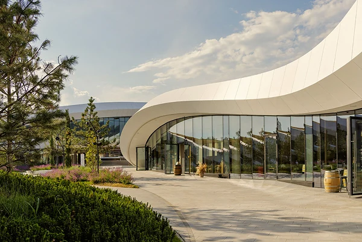

Приоритет на старте
Местные жители
Рестораны
и конкретные события
Ближайшее посещение без отдельной поездки в регион. Возможность проверить поводы вернуться.
Для ознакомления с полной текстовой версией откройте файл Ворд, прикрепленный к этой ссылке.

Задание 1
Подход и последовательность действий из Word. Медиаплан и воронки по направлениям из Excel.
Бюджет ограничен. Начинаем с людей, которым проще приехать сейчас. Остальные направления подключаем под готовое предложение и подтверждённый спрос.
Рестораны
и конкретные события
Ближайшее посещение без отдельной поездки в регион. Возможность проверить поводы вернуться.
Музей
и рестораны
Понятный сценарий на ближайшие дни. Музей как повод приехать, ресторан как самостоятельное предложение или продолжение визита.
Обучение и профильные события при готовых программах, датах и условиях. Для поездки из другого региона нужен конкретный повод.
С первого месяца готовим предложение и сбор целевых заявок. Учитываем срок до сделки и доступность площадок.
SEO и контент с начала проекта. Рекламу в новых регионах проверяем отдельно после первых результатов.
Энотека на старте: дополнительная точка монетизации уже привлечённых совершеннолетних гостей. Расходы гостя в разных точках связываем без двойного учёта.
Выберите месяц, затем откройте текстовую стратегию или задачи по источникам. Пояснения из Word и медиаплан из Excel показаны отдельно.
Проверить аналитику, запустить поиск, актуализировать карточки и приоритетные страницы. Начать интервью и подготовку видеоконтента.
Суммы бюджета определяются по спросу и первым результатам. SEO, карточки, производство контента, аналитика и интервью оцениваются отдельно от рекламных размещений.
Просмотр, маршрут и клик по кнопке не подтверждают бронь, посещение или оплату. Для каждой точки эти действия учитываем раздельно.
Архитектура и культурные события знакомят с пространством. Экспертные видео помогают заинтересовать энтузиастов. Оцениваем досмотры, сохранения, возврат зрителей и доступные переходы по UTM-меткам.
Для подростков используем культурное содержание и события по возрасту. Продвижение алкоголя в этот контент не включается.
Задание 2
Расчёт кампании, узкое место, действия для роста окупаемости и связь рекламы с фактическим посещением.
Проверку начинаем с качества трафика и посадочной страницы. Окончательный результат оцениваем по реальным посещениям и маржинальному доходу.
Переход к покупке не равен подтверждённой покупке или брони. Оформление, оплату и визит нужно измерять отдельно.
Выручка 504 000 ₽. Маржинальный доход до рекламы 176 400 ₽. Кампания не окупилась.
CPC = 300 000 / 20 000 = 15 ₽
CAC = 300 000 / 144 = 2 083,33 ₽
Маржинальный доход = 504 000 × 35% = 176 400 ₽
ROMI = (176 400 − 300 000) / 300 000 = −41,2%
Маржинальный доход на гостя: 1 225 ₽. Для покрытия рекламы нужно минимум 245 гостей.
При неизменной второй конверсии первая должна вырасти примерно до 10,21%. При неизменной первой вторая должна вырасти примерно до 20,42%.
Разобрать запросы, площадки, географию и устройства. Разделить туристов в регионе и планирующих поездку. Проверить фрод, объявления и предложения.
Для музея и ресторана показать соответствующее предложение, цену, время, расположение и заметный следующий шаг. Проверить мобильную загрузку и провести A/B-тест.
Проверить готовые сценарии посещения, например музей и ресторан. Рассчитать состав и цену с учётом затрат и скидок.
После подтверждённой брони или покупки: напоминание, подтверждение участия и помощь с маршрутом. Измеряем долю дошедших до локации.
Сохранять источник и идентификатор посетителя, передавать их в заказ, а затем связывать с фактическим визитом и чеком.
UTM-метки
и yclid
ClientID
Метрики
ID билета
или брони
Скан билета
или отметка прихода
Связанный чек
и возвраты
При переходе во внешний сервис наладить передачу идентификатора. Данные о состоявшемся визите и оплате возвращать в аналитику.
Повторные события исключать. Групповой заказ, число гостей и посещение учитывать раздельно. Неатрибутированные визиты показывать отдельно.
Отдельная мысль по офлайн атрибуции:
Идея очень «воздушная», но думаю ей есть место быть:
Создать приложение + физическую карту. Обе эти сущности могут существовать по отдельности (не всем захочется скачивать приложение или наоборот носить с собой карту)
Сущность может создаваться онлайн или офлайн. Физическая карта, конечно, только офлайн.
Принцип как в развлекательных комплексах, где пополняется баланс на входе, а после эта карта используется для оплаты всех услуг внутри. Благодаря этому – можно будет оцифровать каждый визит, покупку, время нахождения, LTV и т.д.
Так же создаст эффект «закрытого клуба». Вариаций развитий этой идеи много, вплоть до разных уровней. Не хочется эту карту характеризовать, как «лояльность», но очень близка к этому, важно не переходить грань.
Текст задания и подробный медиаплан.